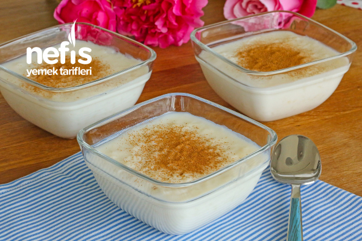

Sütlaç Tarifi
Sütlaç, çeşitli mutfak kültürlerinde bulunabilen bir tatlı.
Türk mutfağında yer alan birçok sütlü tatlı içinde en yaygın yapılanlarından ve tanınanlarından biri de sütlaçtır.
Başlıca malzemeleri pirinç, süt ve şekerdir.

Kaç kişilik:4-6
Hazırlanış:15dk
Pişirme:20dk
Malzemeler
- 1 lt süt
- 2 çay bardağı pirinç
- 1 litre su
- 3 yemek kaşığı pirinç unu
- 1,5-2 su bardağı toz şeker
- 1 su bardağı süt
- tarçın
Tarifi
-
Sütlaç yapmak için öncelikle pirinci yıkayıp su ile ateşe koyun.
-
Pirinçler uzayıp suyu çekene kadar kaynatın, soğuk sütü ekleyin.
-
1-2 defa karıştırıp, kaynamasını bekleyin.
-
Bu arada bir kasede pirinç ununu 1 su bardağı soğuk süt ile ezin.
-
Tencerede kaynamakta olan sütten 1-2 kepçe alıp kaseye ekleyin. (pirinç unu ılınmış olmalı).
-
Pirinç ununu tencereye ekleyin, ara sıra karıştırarak 10 dakika kadar pişirin.
-
Toz şekeri ilave edip karıştırın ve 1-2 taşım kaynatın.
-
Sütlacı kaselere paylaştırın.
-
Soğuyunca sütlaçların üzerlerine tarçın serperek servis edebilirsiniz.
Afiyet olsun